| |
Wicked Review

For today's review, we are heading to Lagoon to review Wicked. Now this has got to be one of the most unique coasters on the planet. When you first look at it, it kind of looks like a Euro Fighter. But nope. This is nothing like a Euro Fighter. In fact, there's really no ride like Wicked out there. And this coaster was made by Zeirer. Yes, the Zeirer that brought you big meandering family coasters such as Jaguar and Pepsi Orange Streak. This is gonna be funky. We get in the trains, and pull down the spatula-like restraints. And with that said, we are off!!! We head around a curve in the dark. We see ourselves inching towards the tower. Then, a siren starts going off and BAM!!! We launch. We rise halfway up the tower, lose some speed, BAM!!! A second launch pulls us up to the top of the tower. We lose the majority of our speed here, but that's OK, cause then we head down a vertical drop, gain back all our speed and are on our way. This coaster has two launches as well as a first drop. And no, this isn't just a two part ride where it has a lifthill, first drop, and a launch as well like on rides like California Screamin and Maverick. Nope, it launches you up the tower and then drops you down. And I honestly really just love that. We then go through a tiny little bump, but unfortunetly, it's not a crazy airtime hill like on Spongebob. But hey, it's still a really fun ride. We then head into an overbanked turn. It may not be all too thrilling, but you know what, it's just a really fun element. So yeah, we go through that and glide straight into a Zero G Roll. And it certainly is a lot of fun. It's very floaty and we just roll right on through this element. We head around a curved hill and into the brake run. Ahh, the first half is over. But to be fair, the second half is a lot of fun too. We head down a small drop and around an overbanked turn. WEE!!! We head around another overbanked turn. This may not be really intense, but something about it just tickles me in the right way. We then head around an S Curve and head into a banked turn. Again, not intense, but I'm just really enjoying all of this. We head down a small little dip and get to TAKE THE TUNNEL!!!! And yeah, we rise on up and glide straight into the brake run. And that's Wicked. A really fun and unique coaster. There's really no coaster like it. I know some call it a family coaster. Ehh, one the one hand, it's certainly not like most family coasters and does things that most people would not consider to be typical of your average family coaster. But on the other hand, it's certainly not an intense coaster. It's really just an incredibly fun coaster that everyone in the whole family can enjoy. So definetly take plenty of rides on Wicked when visiting Lagoon. It's an incredibly fun ride, very rare, and just really cool.
8/10
Location: Lagoon
Opened: 2007
Built by: Zeirer
Last Ridden: June 4, 2017
Wicked Photos


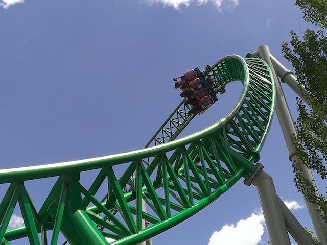


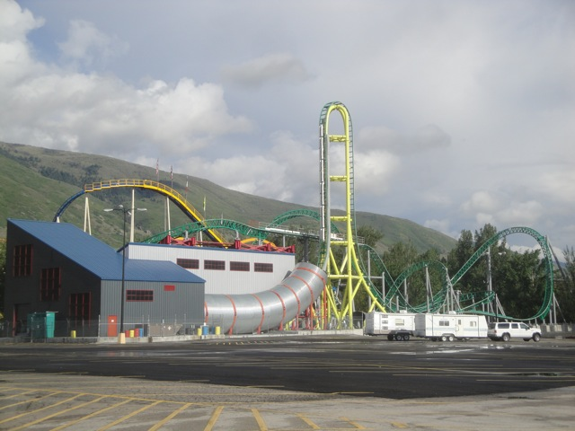
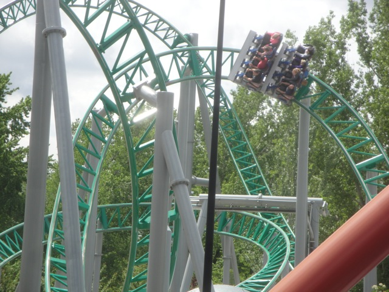

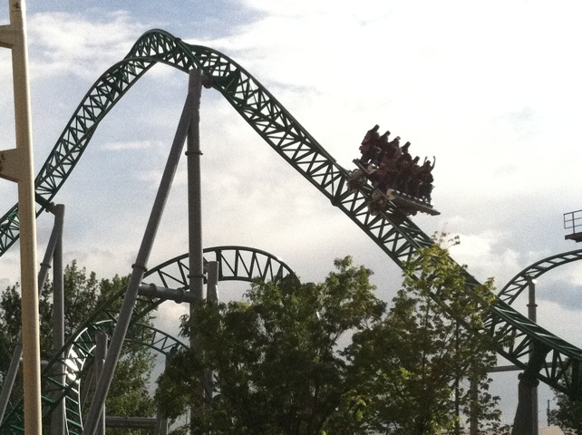
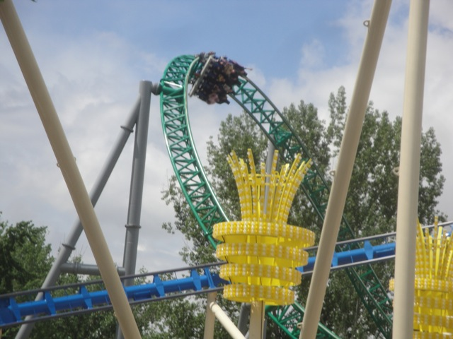

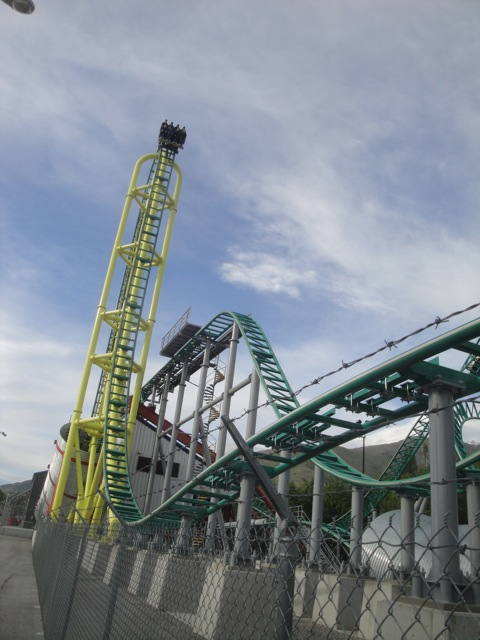
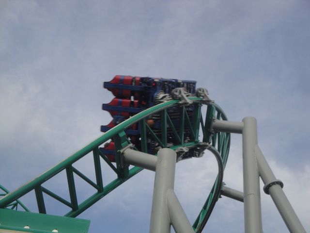
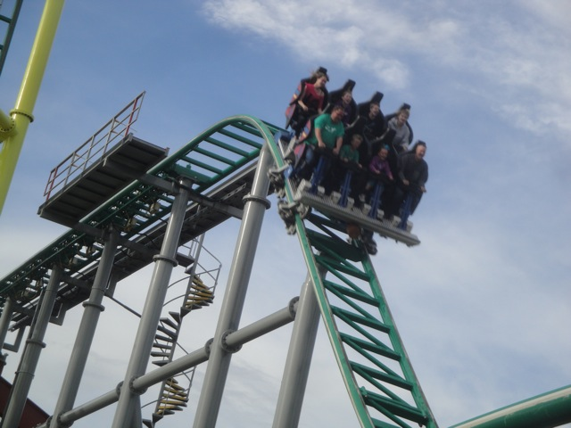


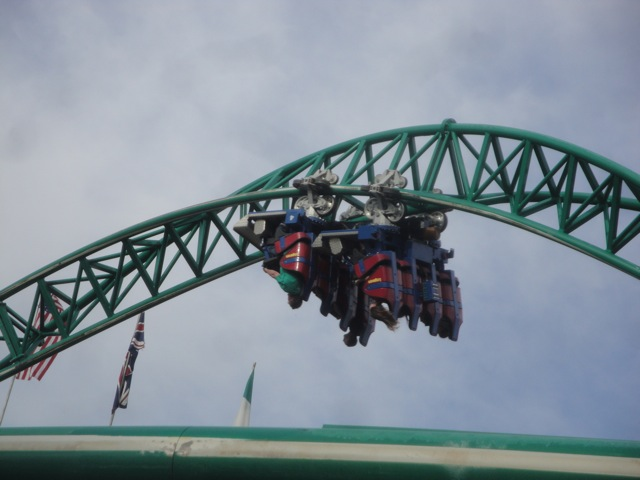

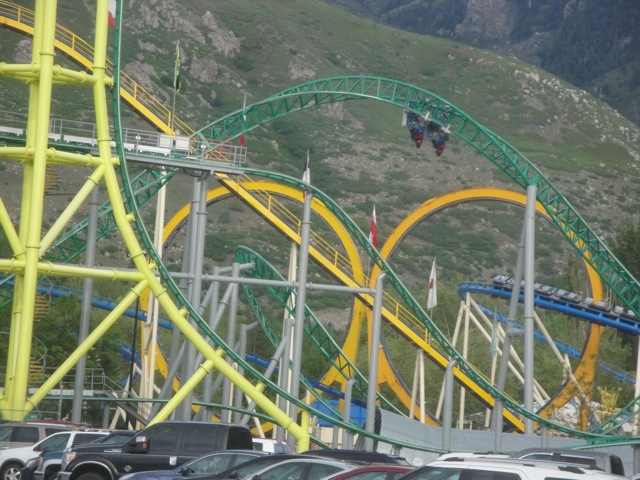
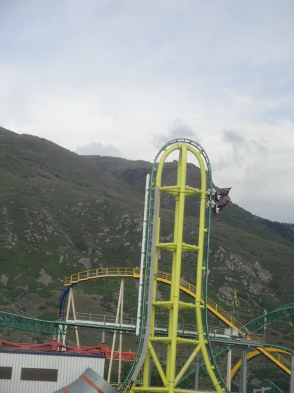
Home
|